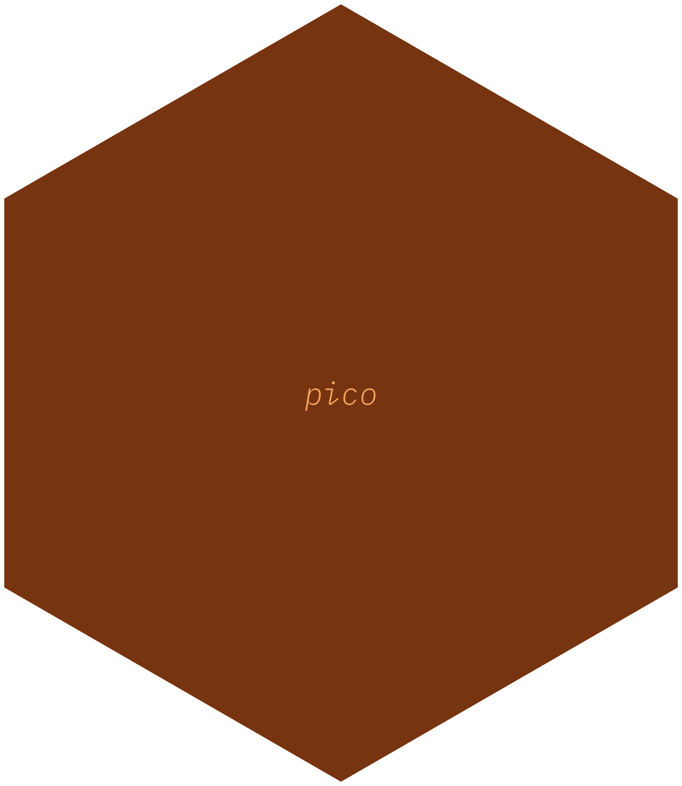

say_hi <- function(name = "buddy") {
paste0("Ahoy-hoy ", name, "!")
}
tl;dr
I made {pico}, an R package for creating tiny R packages with the absolute minimum structure and content. The goal: to demystify package making.
Function in a haystack
I saw a @WeAreRLadies tweet from last week’s curator, @ShreyaLouis. The gist was ‘how can you be more organised when recalling and reusing your own R code?’
See the thread for ideas, but I had the same thought as Fabio: create a personal package of your frequently-used functions so you can invoke them whenever you want.1
What’s the problem?
Packages are daunting, particularly if you haven’t made one before. I’ve written a number of packages for fun and learning, but none have been submitted to CRAN and I’m never quite sure if I’m doing everything ‘correctly’.
From personal experience, I think the esoteric structure and content of R packages are a barrier to beginners. Like, what is the man/ folder and what’s an .Rd file? It’s easy to look at a chonky package repo on GitHub, like the popular {dplyr}, and despair.
Yes, you could RTFM (‘Read the Hecking Manual’) about R packages, but have you looked at it before? And it’s not even necessary to follow all of these steps if you don’t have dreams of submitting it to CRAN.
What if—for teaching purposes—we strip back to the absolute barest of requirements with the goal of demystifying packages and to make it easier to get started?
Minimalism
What’s the least we need for a functioning package? Well, following Karl Broman’s book, all you need is two files and a subfolder. That is all.
Here’s how it looks for an imaginary package called {mypkg}:
mypkg/
├── R/
│ └── functions.R
└── DESCRIPTIONThe mypkg/R/functions.R file is a normal R script where you put your function definitions, like:
The DESCRIPTION file (which has no file extension) might not be as familiar, but it’s basically a text file with only two lines: the package name and a version number (typically 0.0.0.9000 indicates a package under development, whereas 0.1 might be a minor release).2
Package: mypkg
Version: 0.0.0.9000The DESCRIPTION file is like a magic flag that identifies that this folder is special and contains an R package; it isn’t just a boring folder with some R scripts in it.
…And that’s all you need.
Introducing {pico}
So, you could point-and-click to create a folder with the structure and content outlined above, but I’ve also created the {pico} package to make the setup even easier.3
The basic process for using {pico} is:
- Install {pico} with
remotes::install_github("matt-dray/pico") - Create your package with e.g.
pico::create("mypkg", "~/Documents/")(the second argument is a filepath for where to put the package folder) - Add new function definitions to the
mypkg/R/functions.Rscript file - Install the package to your computer with
remotes::install_local("~/Documents/mypkg")and attach it like a normal package withlibrary(mypkg)
Later you can add more functions to R/functions.R (or add more script files to the R/ folder) and can reinstall the package with install_local(), using the force = TRUE argument to overwrite the old version.
Let’s take a look at those steps in a bit more depth.
Install {pico}
First, you can install {pico} from GitHub with help from the {remotes} package.
install.packages("remotes") # if not yet installed
remotes::install_github("matt-dray/pico")You can look up the help files with ?pico::create() at any time.
It’s a really small package, but let me know if you find any bugs or you want to contribute.
Create your package
There’s only one function in {pico}: create(). It generates a folder with the minimum required content, as outlined above. You supply a package name and a directory (folder on your computer) where you want your package to be generated.
As a demonstration, here’s how to create a pico package called {mypkg} in a temporary folder. You should put yours somewhere more permanent and convenient like ~/Documents on macOS, for example.
tmp <- tempdir()
pico::create(name = "mypkg", dir = tmp)Pico package {mypkg} written to:
/var/folders/cg/5x7y2f0x6tqb9mqrc13pd8_40000gn/T//RtmpRGhTOc/mypkgThis will output some lines in the R console that confirm your new package has been written to the location you specified (my example path here is convoluted because it’s just a temporary folder).
The name will be checked against R-package naming standards: it should contain alphanumeric characters or periods only, must have at least two characters, and can’t start with a number nor end with a period. The provided directory also will be checked for existence and, if it already contains a folder with the proposed name of your package, you’ll be asked interactively if you want to overwrite it.
Install your package
So, the package now exists on your computer inside a folder. Now how do you use its functions in an R session?
Normally, you would use install.packages() to fetch a package from CRAN and install it to your computer’s R package library. We can do something similar, but instead of fetching from CRAN, we can fetch the package ‘locally’, i.e. from your computer.
To do this, we can use the {remotes} package, which we installed earlier. It contains an install_local() function to which you pass the package’s filepath on your computer.
remotes::install_local(
path = file.path(tmp, "mypkg") # change to your packages filepath
)✓ checking for file ‘private/var/folders/cg/5x7y2f0x6tqb9mqrc13pd8_40000gn/T//RtmpRGhTOc/mypkg ’ ...
─ preparing ‘mypkg’:
✓ checking DESCRIPTION meta-information
─ checking for LF line-endings in source and make files and shell scripts
─ checking for empty or unneeded directories
─ creating default NAMESPACE file
─ building ‘mypkg_0.0.9000.tar.gz’
* installing *source* package ‘mypkg’ ...
** using staged installation
** R
** byte-compile and prepare package for lazy loading
** help
No man pages found in package ‘mypkg’
*** installing help indices
** building package indices
** testing if installed package can be loaded from temporary location
** testing if installed package can be loaded from final location
** testing if installed package keeps a record of temporary installation path
* DONE (mypkg)You’ll see some output that describes the installation process, ending with DONE.
The package is now installed into your R package library and can be attached like any other package.
library(mypkg)Now the functions from the package are available for use. By default, create() added a dummy function called say_hi() to R/functions.R, which we can use now:
say_hi("chums")[1] "Ahoy-hoy chums!"So, we created an R package, installed it and used it.
Add new functions
Of course, you’ll want to add your own functions to your package. The basic steps are:
- Open the
R/functions.Rscript - Paste in your function definitions and save the file
- Rerun
remotes::install_local()with the argumentforce = TRUE - Restart R, so the updated package is recognised
Here’s what this might look like for our example package. First, you might add the function say_bye() by adding these lines to the functions.R file:
say_bye <- function(name = "folks") {
paste0("Cheerio ", name, "!")
}After you saved the updated file, you can re-run install_local() with the file path and force = TRUE, which will overwrite the old version in the package library.
remotes::install_local(
path = file.path(tmp, "mypkg"),
force = TRUE
)You must restart R after you’ve done this.
Your new functions will then be available from your package, much like the dummy say_hi() function was. Here’s say_bye():
library(mypkg)
say_bye("friends")[1] "Cheerio friends!"So, that means that all those functions you keep forgetting, or that are stored across multiple locations, can be made available to you from one package. And ultimately, all it required was install_github(), create() and install_local().
Note that it can get unwieldy to add all your functions to the functions.R file provided by {pico}, but you can group them up into several R scripts in the R/ subfolder if you like.
Huge limitations
So, I think {pico} is a quick way to get you from ‘no-package’ to ‘package’ quickly, but more importantly it has none of the esoteric, daunting structure and content of a ‘normal’ package.
However.
A pico package doesn’t encourage best practice, nor is it very useful for sharing. That’s why I think the only practical applications are for learning the basics of package structure, or for building a small package of functions that you might personally want to use again in future.
I would absolutely advocate for learning how to make a ‘real’ package, because that additional structure and content is really powerful and exists for a reason. For example, we haven’t documented any of our functions. What if you add a function to your package but you can’t remember how to use it? We also haven’t tested anything. What if something breaks?
I’ve written before about the wonders of {usethis}, a package made specifically to help develop your own R packages without thinking too hard. I believe it provides the perfect starting point for developing your own package without worrying about exactly what files are needed and where.
There’s a vast array of free web-based resources out there for package building. For example, some that I’ve found useful are:
- Hilary Parker’s Writing an R Package from Scratch post
- Tom Westlake’s update to Hilary’s post
- Fabio Votta’s fun slides
- Emil Hvitfeldt’s {usethis} workflow
- Karl Broman’s R Package Primer site, a primer for package development
- Hadley Wickham’s R Packages book
You should make use of those resources, for sure. Do not use {pico} for any serious work. {pico}’s purpose here is to think about how we might demystify package development. At worst I think it’s an interesting curiosity.
Environment
Session info
Last rendered: 2023-07-16 13:41:04 BSTR version 4.3.1 (2023-06-16)
Platform: aarch64-apple-darwin20 (64-bit)
Running under: macOS Ventura 13.2.1
Matrix products: default
BLAS: /Library/Frameworks/R.framework/Versions/4.3-arm64/Resources/lib/libRblas.0.dylib
LAPACK: /Library/Frameworks/R.framework/Versions/4.3-arm64/Resources/lib/libRlapack.dylib; LAPACK version 3.11.0
locale:
[1] en_US.UTF-8/en_US.UTF-8/en_US.UTF-8/C/en_US.UTF-8/en_US.UTF-8
time zone: Europe/London
tzcode source: internal
attached base packages:
[1] stats graphics grDevices utils datasets methods base
other attached packages:
[1] mypkg_0.0.9000
loaded via a namespace (and not attached):
[1] desc_1.4.2 digest_0.6.31 R6_2.5.1 fastmap_1.1.1
[5] xfun_0.39 remotes_2.4.2 knitr_1.43.1 htmltools_0.5.5
[9] rmarkdown_2.23 ps_1.7.5 cli_3.6.1 processx_3.8.1
[13] callr_3.7.3 pico_0.0.0.9000 compiler_4.3.1 rprojroot_2.0.3
[17] prettyunits_1.1.1 rstudioapi_0.15.0 tools_4.3.1 pkgbuild_1.4.1
[21] evaluate_0.21 yaml_2.3.7 crayon_1.5.2 rlang_1.1.1
[25] jsonlite_1.8.7 htmlwidgets_1.6.2Reuse
CC BY-NC-SA 4.0